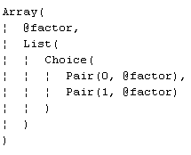

The API itself is quite small and simple, and is best understood in the context of a real example. Since the AST contains standard Scala data structures, an API client program is most conveniently written in Scala. A Java version of the same program is also shown for comparison.
The following code segment uses the API to load the programmatically use the ArithExpr parser (from the Sample Grammars). The parser is then applied to the string "(3 + 5) / (8 - 4)" to obtain an AST that represents its structure. Other functions that use the AST to actually evaluate the expression are also shown later.
import java.io.File
import scala.util.parsing.input.CharSequenceReader
import vll.core.VllParsers
def main(args: Array[String]) {
val vll = VllParsers.fromFile(new File("ArithExpr.vll"))
val phraseParser = vll.phrase(vll.getParserFor("Expr"))
val parseResult = phraseParser(new CharSequenceReader("(3 + 5) / (8 - 4)"))
parseResult match {
case vll.Success(resultAST, _) => println(evalExprAST(resultAST))
case vll.Failure(msg, where) => printf("Error: '%s' at line %d col %d%n",
msg, where.pos.line, where.pos.column)
}
}
The API calls used in the code are explained below. But before getting into the details
observe that the class VLLParsers is central to all IDE operations.
It has factory methods for creating instances from previously saved grammar-files.
The instances created by the factory methods extend
Parsers with
PackratParsers.
and also have other convenience methods for retrieving parser-rules by name, and for applying
them to strings.
VllParsers.fromFile(File) - This is the entry point for IDE operations. It takes
a File named ArithExpr.vll containing the grammar-file, and returns a unique instance of
VLLParsers that has all the parser-rules defined in the grammar-file.getParserFor(String) - This VLLParsers instance method returns a
Parser
for the named parser-rule. The code above uses it to retrieve the top-level parser-rule
(named Expr)phrase(Parser)
- This VLLParsers instance method returns a phrase-parser created
from the supplied Parser. A phrase-parser must consume all of the input text to succeed.apply(CharSequenceReader)
- This Parser
instance method applies itself to the argument (effectively a wrapped String).
This is actually how you parse a string via the API.
In Scala, the apply instance method is invoked by just using
parenthesis that enclose the argument. So the line
val parseResult = parser(new CharSequenceReader("(3 + 5) / (8 - 4)"))
actually invokes the apply method to parse the string supplied.Success and Failure
- Case-classes inherited by VLLParsers from
Parsers
that are useful for testing the result of parsing a string. Details of these classes
can be found in the standard Scala documentation. |
There is not much more to say about the API. The class VLLParsers has two
more factory methods that facilitate the creation of parsers from other sources:
fromString(s: String): VllParsers - creates a parser from a string
(the contents of a saved grammar-file). This can be useful for completely
encapsulating small grammar files within a program -- see the example under
Code with Embedded Grammar below.fromXml(xml:
Elem): VllParsers
- creates a parser from an XML structure in the program. |
Since the class VLLParsers extends
Parsers with
PackratParsers,
familiarity with that part of the Scala API is also an important prerequisite.
The description in this part is not related to the VisualLangLab API. However, an application program must also process the AST returned by the parser, and the example presented here shows some useful techniques. Before proceeding further, review the structure of the ASTs of the three parser-rules (Expr, factor, and term) in Table-1 below.
| Table-1. AST Structure | ||
| Expr | factor | term |
|---|---|---|
|
|
 |
The code below is the evalExprAST method to which
main() passes the entire AST.
private def evalExprAST(ast: Any): Float = ast match {
case Array(term, list: List[_]) =>
var result: Float = evalTermAST(term)
list.foreach(_ match {
case Pair(0, plusAST) => result += evalTermAST(plusAST)
case Pair(1, minusAST) => result -= evalTermAST(minusAST)
})
result
}
The methods evalFactorAST and evalTermAST which
handle the ASTs from factor and term respectively are shown
below.
private def evalFactorAST(ast: Any): Float = ast match {
case Pair(0, f: String) => f.toFloat
case Pair(1, expr) => evalExprAST(expr)
}
private def evalTermAST(ast: Any): Float = ast match {
case Array(factor, list: List[_]) =>
var result: Float = evalFactorAST(factor)
list.foreach(_ match {
case Pair(0, multAST) => result *= evalFactorAST(multAST)
case Pair(1, divAST) => result /= evalFactorAST(divAST)
})
result
}
Observe that all these methods accept an Any argument that is
split into its constituent parts by pattern matching. The returned value is
a Float. If you are unable to relate the code to the information
in Table-1 above, review the section on AST structure in
AST and Action Code.html
The complete code of the example is shown below. Apart from the code you will also need the ArithExpr grammar-file. The grammar-file can be created by opening the sample code (Help -> Sample grammars -> ArithExpr from the main menu) in the VisualLangLab GUI and saving it (File -> Save As from the main menu) to a file named "ArithExpr.vll". This file should be placed in the directory where the demo program will be run. The VisualLangLab JAR file must be on the classpath during compilation and at run-time.
import java.io.File
import scala.util.parsing.input.CharSequenceReader
import vll.core.VllParsers
object ArithExprWithAPI {
private def evalFactorAST(ast: Any): Float = ast match {
case Pair(0, f: String) => f.toFloat
case Pair(1, expr) => evalExprAST(expr)
}
private def evalTermAST(ast: Any): Float = ast match {
case Array(factor, list: List[_]) =>
var result: Float = evalFactorAST(factor)
list.foreach(_ match {
case Pair(0, multAST) => result *= evalFactorAST(multAST)
case Pair(1, divAST) => result /= evalFactorAST(divAST)
})
result
}
private def evalExprAST(ast: Any): Float = ast match {
case Array(term, list: List[_]) =>
var result: Float = evalTermAST(term)
list.foreach(_ match {
case Pair(0, plusAST) => result += evalTermAST(plusAST)
case Pair(1, minusAST) => result -= evalTermAST(minusAST)
})
result
}
def main(args: Array[String]) {
val vll = VllParsers.fromFile(new File("ArithExpr.vll"))
val phraseParser = vll.phrase(vll.getParserFor("Expr"))
val parseResult = phraseParser(new CharSequenceReader("(3 + 5) / (8 - 4)"))
parseResult match {
case vll.Success(resultAST, _) => println(evalExprAST(resultAST))
case vll.Failure(msg, where) => printf("Error: '%s' at line %d col %d%n",
msg, where.pos.line, where.pos.column)
}
}
}
The Java version shown below uses the same method names as the Scala version to facilitate comparison with the Scala version. The Scala libraries and the VisualLangLab JAR file must be on the classpath when you run this program. As with the Scala version, the grammar-file ArithExpr.vll is expected to be in the working directory.
The Java version is 63 lines compared with 41 lines for the Scala program, but the loss of clarity and intuitiveness of the Java version (when handling Scala types) is the main disadvantage.
import java.io.File;
import scala.Tuple2;
import scala.collection.immutable.List;
import scala.util.parsing.input.CharSequenceReader;
import vll.core.VllParsers;
public class ArithExprJavaDemo {
static Float evalFactorAST(Object ast) {
Tuple2<Integer, Object> pair = (Tuple2<Integer, Object>) ast;
Float result = -1f;
if (pair._1.equals(new Integer(0))) {
result = Float.parseFloat((String)pair._2);
} else if (pair._1.equals(new Integer(1))) {
result = evalExprAST(pair._2);
}
return result;
}
static Float evalExprAST(Object ast) {
Object[] arr = (Object[]) ast;
Float result = evalTermAST(arr[0]);
List<Object> aList = (List<Object>) arr[1];
for (int i = 0; i < aList.length(); ++i) {
Tuple2<Integer, Object> pair = (Tuple2<Integer, Object>) aList.apply(i);
if (pair._1.equals(new Integer(0))) {
result += evalTermAST(pair._2);
} else if (pair._1.equals(new Integer(1))) {
result -= evalTermAST(pair._2);
}
}
return result;
}
static Float evalTermAST(Object ast) {
Object[] arr = (Object[]) ast;
Float result = evalFactorAST(arr[0]);
List<Object> aList = (List<Object>) arr[1];
for (int i = 0; i < aList.length(); ++i) {
Tuple2<Integer, Object> pair = (Tuple2<Integer, Object>) aList.apply(i);
if (pair._1.equals(new Integer(0))) {
result *= evalFactorAST(pair._2);
} else if (pair._1.equals(new Integer(1))) {
result /= evalFactorAST(pair._2);
}
}
return result;
}
public static void main(String[] args) {
String input = "(3 + 5) * (8 - 4)";
VllParsers vll = VllParsers.fromFile(new File("ArithExpr.vll"));
VllParsers.Parser phraseParser = vll.phrase(vll.getParserFor("Expr"));
VllParsers.ParseResult<Object> parseResult = phraseParser.apply(new CharSequenceReader(input));
if (parseResult.successful()) {
Object ast = parseResult.get();
Float result = evalExprAST(ast);
System.out.println(result);
} else {
System.out.println(parseResult);
}
}
}
It is sometimes required to embed all resources (including the grammar-file)
within the program. The code below is another version of ArithExprWithAPI
with the grammar (extracted from the grammar-file) supplied as a string to a factory method.
import java.io.File
import scala.util.parsing.input.CharSequenceReader
import vll.core.VllParsers
object ArithExprWithAPI02 {
private def evalFactorAST(ast: Any): Float = ast match {
case Pair(0, f: String) => f.toFloat
case Pair(1, expr) => evalExprAST(expr)
}
private def evalTermAST(ast: Any): Float = ast match {
case Array(factor, list: List[_]) =>
var result: Float = evalFactorAST(factor)
list.foreach(_ match {
case Pair(0, multAST) => result *= evalFactorAST(multAST)
case Pair(1, divAST) => result /= evalFactorAST(divAST)
})
result
}
private def evalExprAST(ast: Any): Float = ast match {
case Array(term, list: List[_]) =>
var result: Float = evalTermAST(term)
list.foreach(_ match {
case Pair(0, plusAST) => result += evalTermAST(plusAST)
case Pair(1, minusAST) => result -= evalTermAST(minusAST)
})
result
}
def main(args: Array[String]) {
val vll = VllParsers.fromString(grammar)
val phraseParser = vll.phrase(vll.getParserFor("Expr"))
val parseResult = phraseParser(new CharSequenceReader("(3 + 5) / (8 - 4)"))
parseResult match {
case vll.Success(resultAST, _) => println(evalExprAST(resultAST))
case vll.Failure(msg, where) => printf("Error: '%s' at line %d col %d%n",
msg, where.pos.line, where.pos.column)
}
}
val grammar = """
<VLL-Grammar>
<Whitespace>\\s+</Whitespace>
<Comments></Comments>
<Tokens>
<Literal Name="RPAREN" Pattern=")"/>
<Regex Name="floatingPointNumber" Pattern="(\\d+(\\.\\d*)?|\\d*\\.\\d+)([eE][+-]?\\d+)?[fFdD]?"/>
<Literal Name="MULT" Pattern="*"/>
<Literal Name="LPAREN" Pattern="("/>
<Literal Name="MINUS" Pattern="-"/>
<Literal Name="DIV" Pattern="/"/>
<Literal Name="PLUS" Pattern="+"/>
</Tokens>
<Parsers>
<Parser Name="Expr">
<Sequence >
<Reference Ref="term" />
<Choice Mult="*">
<Sequence >
<Token Ref="PLUS" Drop="true"/>
<Reference Ref="term" />
</Sequence>
<Sequence >
<Token Ref="MINUS" Drop="true"/>
<Reference Ref="term" />
</Sequence>
</Choice>
</Sequence>
</Parser>
<Parser Name="factor">
<Choice >
<Token Ref="floatingPointNumber" />
<Sequence >
<Token Ref="LPAREN" Drop="true"/>
<Reference Ref="Expr" />
<Token Ref="RPAREN" Drop="true"/>
</Sequence>
</Choice>
</Parser>
<Parser Name="term">
<Sequence >
<Reference Ref="factor" />
<Choice Mult="*">
<Sequence >
<Token Ref="MULT" Drop="true"/>
<Reference Ref="factor" />
</Sequence>
<Sequence >
<Token Ref="DIV" Drop="true"/>
<Reference Ref="factor" />
</Sequence>
</Choice>
</Sequence>
</Parser>
</Parsers>
</VLL-Grammar>
"""
}